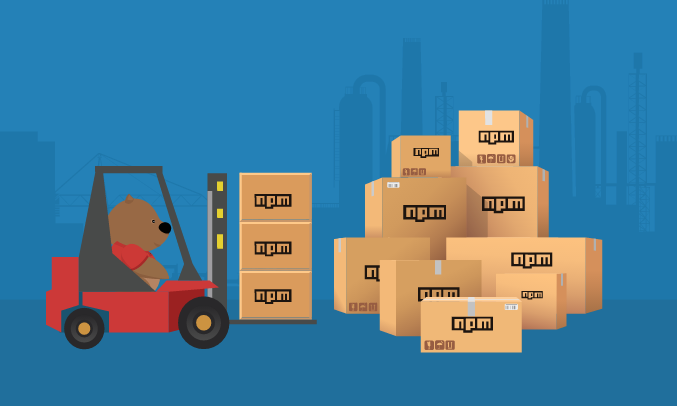
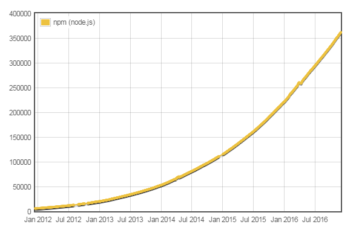
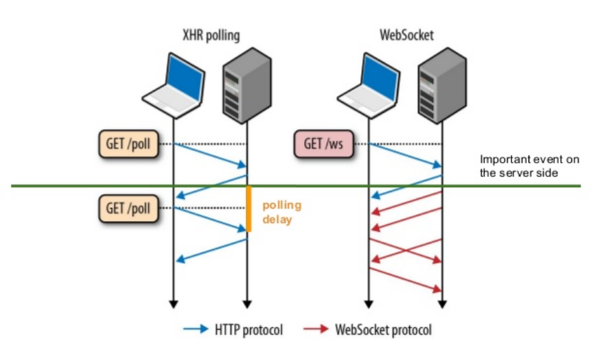
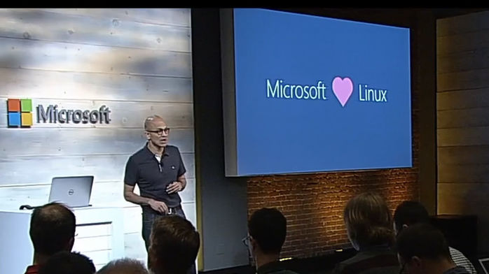

TypeScript on the Web:
Real Time Applications with Node.js and Angular 2
CONASOL 2016
Luis Aviles / @luixaviles
Agenda
Node.js
WebSockets & Socket.io
TypeScript
Angular 2
Live Demo
Node.js
Node.js
Open Source platform for building applications, using JavaScript
An application optimized for performing high speed input/output operations
Node.js
A web server
An API server
NPM
The Node Package Manager
NPM
A tool that assist with the searching, packaging, publishing and updating of node modules
npm install [module] --save
NPM

NPM Repository
npmjs.com Contains a massive repository of node packages
Over 350000 node packages exist!
NPM modules

Source: http://www.modulecounts.com
WebSockets
WebSockets - What?
A persistent connection between the client and the server
Both parties can start sending data at any time
WebSockets - Why?
Bi-directional communication
Great performance
Polling vs WebSockets

Socket.io
Socket.io - What?
Real Time application framework
Wrapper around WebSockets
Send events between client and the server
Socket.io API (Server)
// Server
io.on('connection', callback(socket))
// Socket
socket.on('event', callback(data))
socket.emit('event', data)
socket.broadcast.emit('event', data)
Socket.io API (Client)
// Socket
socket.on('event', callback(data))
socket.emit('event', data)
Socket.io - API
Works with JavaScript, Android, iOS clients
TypeScript
TypeScript
Free and Open Source programming language
Developed and Maintained by Microsoft
Compiles to plain JavaScript
Any browser. Any host. Any OS.

Angular 2

Angular 2
Written in TypeScript
Is not an upgrade from version 1.x
Angular 2
Component based Programming
Semantic Versioning
MAJOR.MINOR.PATCH2.2.4 -> Current Version
Live Demo
https://github.com/luixaviles/socket-io-typescript-chatsocket-io-typescript-chat: A Socket.io Example using TypeScript - https://t.co/oZFj5eyOuX
— JavaScript Daily (@JavaScriptDaily) November 22, 2016